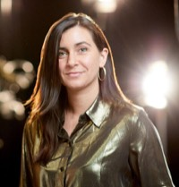

HBO
87 people whose festival biography mentions HBO. A mention can mean a job, a past job, a grant, a broadcast or an award: read the bio for which.

 Nina AlvarezPanelist · 3 editions, 2021–2026
Nina AlvarezPanelist · 3 editions, 2021–2026- Alex GibneyFilmmaker, panelist · 3 editions, 2015–2019
 Matthew HeinemanFilmmaker, panelist · 3 editions, 2015–2022
Matthew HeinemanFilmmaker, panelist · 3 editions, 2015–2022
- Judith MatloffPanelist, workshop leader · 3 editions, 2017–2024Columbia Graduate School of Journalism
- Laura BlumenfeldModerator · 2 editions, 2018–2024
- Assia BoundaouiPanelist, filmmaker · 2 editions, 2017–2018
 Billy CorbenFilmmaker, panelist · 2 editions, 2024–2025
Billy CorbenFilmmaker, panelist · 2 editions, 2024–2025 Lana GarlandFestival team, moderator · 2 editions, 2023–2024
Lana GarlandFestival team, moderator · 2 editions, 2023–2024- Judith HelfandPanelist, workshop leader, festival team · 2 editions, 2021–2022Chicken & Egg Pictures


- Ivy MeeropolFilmmaker, panelist · 2 editions, 2019–2025
 Andy SarjahaniFilmmaker · 2 editions, 2023–2024
Andy SarjahaniFilmmaker · 2 editions, 2023–2024
- Ryan WhiteFilmmaker, panelist · 2 editions, 2017–2020
- Sasha Joelle AchilliFilmmaker, panelist · 2018

 Macky AlstonFilmmaker, panelist · 2024
Macky AlstonFilmmaker, panelist · 2024- Karim AmerPanelist · 2019
 Craig AtkinsonPanelist · 2016
Craig AtkinsonPanelist · 2016
- Alexis BloomFilmmaker, panelist · 2018
 James BurnsFilmmaker · 2021
James BurnsFilmmaker · 2021 Michael CascioPanelist · 2021
Michael CascioPanelist · 2021- Erika CheungPanelist · 2019
 Sarah ChoiPanelist · 2021
Sarah ChoiPanelist · 2021 Philip CoxFilmmaker · 2025
Philip CoxFilmmaker · 2025- Kief DavidsonFilmmaker · 2016
 Kate DavisFilmmaker · 2023
Kate DavisFilmmaker · 2023- Rodrigo DorfmanPanelist · 2019
 Carol DysingerFilmmaker, panelist · 2023
Carol DysingerFilmmaker, panelist · 2023- Ezra EdelmanPanelist · 2016
- Justin FentonPanelist · 2023
 Arjun FischerFilmmaker · 2026
Arjun FischerFilmmaker · 2026 Darren FosterFilmmaker · 2022
Darren FosterFilmmaker · 2022- Geeta GandbhirPanelist · 2021
 Christalyn HamptonFilmmaker · 2026
Christalyn HamptonFilmmaker · 2026- Johnny HoworthFilmmaker, panelist · 2024
 Kristi JacobsonFilmmaker, panelist · 2016
Kristi JacobsonFilmmaker, panelist · 2016 Eugene JareckiPanelist, filmmaker · 2025
Eugene JareckiPanelist, filmmaker · 2025 Sarah JenksFilmmaker · 2021
Sarah JenksFilmmaker · 2021 Jeffrey JohnsonFilmmaker · 2022
Jeffrey JohnsonFilmmaker · 2022 Leen KaradshehPanelist · 2022
Leen KaradshehPanelist · 2022- Barbara KoppleFilmmaker · 2019
 Marc Levin2021
Marc Levin2021 Beth LevisonFilmmaker, panelist · 2021
Beth LevisonFilmmaker, panelist · 2021 Annukka Lilja2026
Annukka Lilja2026- Shola LynchWorkshop leader · 2018Schomburg Center for Research in Black Culture, The New York Public Library
- Amy MarquisPanelist · 2019
 Rachel MasonPanelist · 2026
Rachel MasonPanelist · 2026- Tom McCarthyFilmmaker · 2015
 Matthew ModineFilmmaker, panelist · 2024
Matthew ModineFilmmaker, panelist · 2024- Thor NeureiterPanelist · 2015

 Raoul PeckPanelist, filmmaker · 2024
Raoul PeckPanelist, filmmaker · 2024- Sam PollardFilmmaker · 2020
- Maxim PozdorovkinFilmmaker, panelist · 2018
 Jerry RisiusFilmmaker · 2021
Jerry RisiusFilmmaker · 2021- Kenneth RosenbergFilmmaker · 2019
 Bernardo Ruiz2024
Bernardo Ruiz2024
 Nimco SheikhadenFilmmaker · 2025
Nimco SheikhadenFilmmaker · 2025 Miriam ShorFilmmaker, panelist · 2026
Miriam ShorFilmmaker, panelist · 2026 Sonja SohnFilmmaker · 2021
Sonja SohnFilmmaker · 2021- Paul TaylorFilmmaker · 2020

- Mila TurajlicFilmmaker · 2017
 Brennan Vance2021
Brennan Vance2021- Steven Leckart · Maia WiklerFilmmaker · 2026


